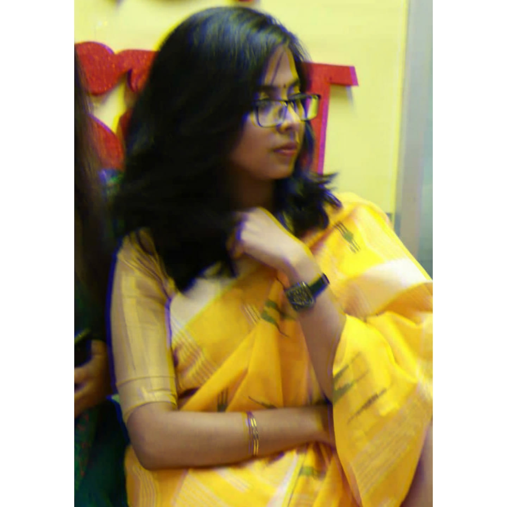

I'm Dr. Zannatul Ferdoush, a Dental Surgeon by profession and I'm doing my post-graduation training on Oral and Maxillofacial Surgery in Dhaka Dental College and Hospital. Earlier of my childhood, I have always found myself around books, colors, and music and these wonders of life help me expanding my imagination, dreams, and passion in a wide way. I have been fascinated by art and music throughout my life. I like to think, life wouldn't be this majestic without the magic of art and music. I love to try different things in my life and this is the reason I kept myself busy in various sectors in art. In the design sector or as I say the artistic sector, I love the clean, minimalistic design but also, I'm in love with the retro kind of design. I'm the person who doesn't want to confine herself in a definite box and I always have been pushing myself to think outside the box. I love to take challenges regarding anything. I do take my passion seriously and I don't give up on anything I commit or decide to do. If I make any design on my own, I would put my heart and soul in that.
